Quadratic equations are second order polynomials, and have the form $f(x)=ax^2+bx+c$ .
Describe the criteria for, and properties of, quadratic functions
The single defining feature of quadratic functions is that they are of the second order, or of degree two. This means that in all quadratic functions, the highest exponent of $x$ in a non-zero term is equal to two. A quadratic function is of the general form:
where $a$ , $b$ , and $c$ are constants and $x$ is the independent variable. The constants $b$ and $c$ can take any finite value, and $a$ can take any finite value other than $0$ .
A quadratic equation is a specific case of a quadratic function, with the function set equal to zero:
When all constants are known, a quadratic equation can be solved as to find a solution of $x$ . Such solutions are known as zeros. There are several ways of finding $x$ , but these methods will be discussed later.
Quadratic equations are different than linear functions in a few key ways.
Quadratic functions can be expressed in many different forms. The form written above is called standard form. Additionally
is known as factored form, where $x_1$ and $x_2$ are the zeros, or roots, of the equation. These are $x$ values at which the function crosses the y-axis (and thus where $y$ equals zero).
The vertex form is displayed as:
where $h$ and $k$ are respectively the coordinates of the vertex, the point at which the function reaches either its maximum (if $a$ is negative) or minimum (if $a$ is positive).
The zeros of a quadratic equation can be found by solving the quadratic formula.
Solve for the roots of a quadratic function by using the quadratic formula
The quadratic formula is one tool that can be used to find the roots of a quadratic equation. It is written:
where the values of $a$ , $b$ , and $c$ are the values of the coefficients in the quadratic equation:
The quadratic formula can always be used to find the roots of a quadratic equation, regardless of whether the roots are real or complex, whole numbers or fractions, and so on.
To use the quadratic formula, two criteria must be satisfied:
The first criterion must be satisfied to use the quadratic formula because conceptually, the formula gives the values of $x$ where the quadratic function $f(x) = ax^2+bx+c = 0$ ; the roots of the quadratic function.
You can see why the second condition must be true by looking at the quadratic formula. If $a=0$ , the denominator of the formula is zero, which results in an undefined quantity. Conceptually, this makes sense because if $a=0$ , then the function $f(x) = ax^2 + bx+c$ is not quadratic, but linear!
Solutions to $ax^2 + bx+c =0$ can be found by using the quadratic formula
The symbol ± indicates there will be two solutions, one that involves adding the square root of $b^2-4ac$ , and the other found by subtracting said square root. The resulting $x$ values (zeros) may or may not be distinct, and may or may not be real.
Let's take a look at an example. Suppose we want to find the roots of the following quadratic function:
First, we need to set the function equal to zero, as the roots are where the function equals zero.
Second, we need to identify the constants in the equation. The value of $a$ is two, the value of $b$ is five, and the value of $c$ is three. We can now substitute these values into the quadratic equation and simplify:
$\displaystyle x = \frac{-5}{4} + \frac{1}{4}$ , $\displaystyle \frac{-5}{4} - \frac{1}{4}$
$x = \dfrac{-3}{4}$ , $\dfrac{-6}{4}$
$x=\dfrac{-3}{4}$ , $\dfrac{-3}{2}$
The discriminant of a polynomial is a function of its coefficients that reveals information about the polynomial's roots.
Explain how and why the discriminant can be used to find the number of real roots of a quadratic equation
The discriminant of a quadratic function is a function of its coefficients that reveals information about its roots. A root is the value of the $x$ coordinate where the function crosses the $x$ -axis. That is, it is the $x$ -coordinate at which the function's value equals zero.
The discriminant for quadratic functions is:
$\Delta = b^2-4ac$
Where $a$ , $b$ , and $c$ are the coefficients in $f(x) = ax^2 + bx + c$ . The number of roots of the function can be determined by the value of $\Delta$ .
Recall the quadratic formula:
where $a$ , $b$ and $c$ are the constants ($a$ must be non-zero) from a quadratic polynomial.
The discriminant $\Delta =b^2-4ac$ is the portion of the quadratic formula under the square root.
If ${\Delta}$ is positive, the square root in the quadratic formula is positive, and the solutions do not involve imaginary numbers.
$x={\dfrac{-b \pm \sqrt{\text{positive number}}}{2a}}$
Because adding and subtracting a positive number will result in different values, a positive discriminant results in two distinct solutions, and two distinct roots of the quadratic function.
If ${\Delta}$ is equal to zero, the square root in the quadratic formula is zero:
Since adding zero and subtracting zero in the quadratic equation lead to the same outcome, there is only one distinct root of the quadratic function.
If ${\Delta}$ is less than zero, the value under the square root in the quadratic formula is negative:
This means the square root itself is an imaginary number, so the roots of the quadratic function are distinct and not real.
Consider the quadratic function:
Using $1$ as the value of $a$ , $-1$ as the value of $b$ , and $-2$ as the value of $c$ , the discriminant of this function can be determined as follows:
Because Δ is greater than zero, the function has two distinct, real roots. Checking graphically, we can confirm this is true; the zeros of the function can be found at $x=-1$ and $x=2$ .
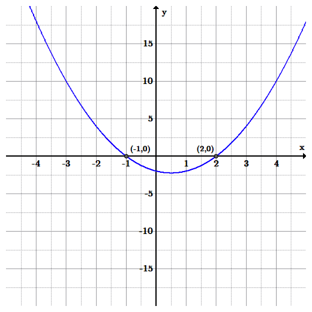Graph of a polynomial with the quadratic function $ f(x) = x^2 - x - 2$ . Because the value is greater than 0, the function has two distinct, real zeros. The graph of shows that it clearly has two roots: the function crosses the $x$ -axis at $x=-1$ and $x=2$ .
Many equations with no odd-degree terms can be reduced to quadratics and solved with the same methods as quadratics.
Use the quadratic formula to solve any equation in quadratic form
Higher degree polynomial equations can be very difficult to solve. In some special situations, however, they can be made more manageable by reducing their exponents via substitution. If a substitution can be made such that the higher order polynomial takes the form of a quadratic, any method for solving a quadratic equation can be applied.
For example, if a quartic equation is biquadratic—that is, it includes no terms of an odd-degree— there is a quick way to find the zeroes of the quartic function by reducing it into a quadratic form. Consider a quadratic function with no odd-degree terms which has the form:
If we let an arbitrary variable $p$ equal $x^2$ , this can be reduced to an equation of a lower degree:
With substitution, we were able to reduce a higher order polynomial into a quadratic equation. It can now be solved with any of a number of methods (via graphing, factoring, completing the square, or by using the quadratic formula).
Once values of $p$ are found, each positive value of the temporary variable $p$ can be used to find two values of $x$ such that:
As with every square root, the root of $p$ will have two values, one positive and one negative. It is important to realize that the same kind of substitution can be done for any equation in quadratic form, not just quartics.
As an example, consider the equation:
Graph of the function $f(x) = x^4-12x^2+20$ .
We can substitute the arbitrary variable $p$ in place of $x^2$ :
This equation is now solvable for $p$ using the quadratic formula:
Simplifying this, we find $p$ equals 2 or 10.
Knowing that $p=x^2$ , we can use each value of $p$ to solve for two values of $x$ :
$x=\pm \sqrt 2$ and $x= \pm \sqrt 10$
A similar procedure can be used to solve higher-order equations. The requirement is that there are two terms of $x$ such that the ratio of the highest exponent of $x$ to the lower is $2:1$ .
The graph of a quadratic function is a parabola, and its parts provide valuable information about the function.
Describe the parts and features of parabolas
Recall that a quadratic function has the form
$\displaystyle f(x)=ax^{2}+bx+c$ .
where $a$ , $b$ , and $c$ are constants, and $a\neq 0$ .
The graph of a quadratic function is a U-shaped curve called a parabola. This shape is shown below.
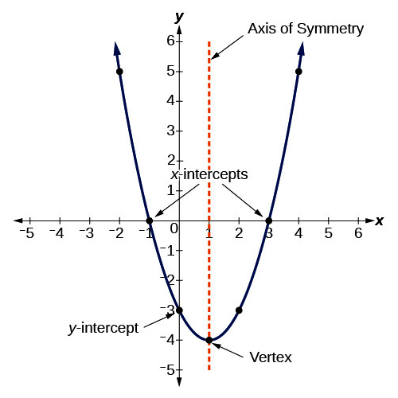The graph of a quadratic function is a parabola.
In graphs of quadratic functions, the sign on the coefficient $a$ affects whether the graph opens up or down. If $a<0$ , the graph makes a frown (opens down) and if $a>0$ then the graph makes a smile (opens up). This is shown below.
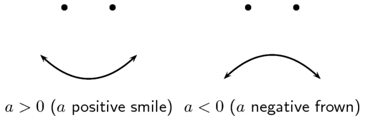The sign on the coefficient $a$ determines the direction of the parabola.
Parabolas have several recognizable features that characterize their shape and placement on the Cartesian plane.
One important feature of the parabola is that it has an extreme point, called the vertex. If the parabola opens up, the vertex represents the lowest point on the graph, or the minimum value of the quadratic function. If the parabola opens down, the vertex represents the highest point on the graph, or the maximum value. In either case, the vertex is a turning point on the graph.
Parabolas also have an axis of symmetry, which is parallel to the y-axis. The axis of symmetry is a vertical line drawn through the vertex.
The y-intercept is the point at which the parabola crosses the y-axis. There cannot be more than one such point, for the graph of a quadratic function. If there were, the curve would not be a function, as there would be two $y$ values for one $x$ value, at zero.
The x-intercepts are the points at which the parabola crosses the x-axis. If they exist, the x-intercepts represent the zeros, or roots, of the quadratic function, the values of $x$ at which $y=0$ . There may be zero, one, or two $x$ -intercepts. The number of $x$ -intercepts varies depending upon the location of the graph (see the diagram below).
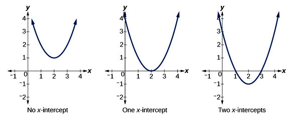A parabola can have no x-intercepts, one x-intercept, or two x-intercepts.
Recall that if the quadratic function is set equal to zero, then the result is a quadratic equation. The solutions to the equation are called the roots of the function. These are the same roots that are observable as the $x$ -intercepts of the parabola.
Notice that, for parabolas with two $x$ -intercepts, the vertex always falls between the roots. Due to the fact that parabolas are symmetric, the $x$ -coordinate of the vertex is exactly in the middle of the $x$ -coordinates of the two roots.
The roots of a quadratic function can be found algebraically or graphically.
Describe the solutions to a quadratic equation as the points where the parabola crosses the x-axis
Recall how the roots of quadratic functions can be found algebraically, using the quadratic formula $(x=\frac{-b \pm \sqrt {b^2-4ac}}{2a})$ . The roots of a quadratic function can also be found graphically by making observations about its graph. These are two different methods that can be used to reach the same values, and we will now see how they are related.
Consider the quadratic function that is graphed below. Let's solve for its roots both graphically and algebraically.
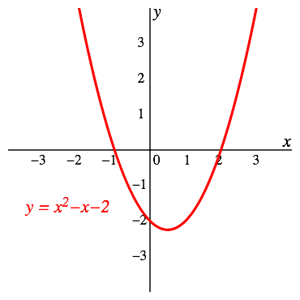Graph showing the parabola on the Cartesian plane, including the points where it crosses the x-axis.
Notice that the parabola intersects the $x$ -axis at two points: $(-1, 0)$ and $(2, 0)$ . Recall that the $x$ -intercepts of a parabola indicate the roots, or zeros, of the quadratic function. Therefore, there are roots at $x = -1$ and $x = 2$ .
Now, let's solve for the roots of $f(x) = x^2 - x- 2$ algebraically with the quadratic formula.
Recall that the quadratic equation sets the quadratic expression equal to zero instead of $f(x)$ :
Now the quadratic formula can be applied to find the $x$ -values for which this statement is true. For the given equation, we have the following coefficients: $a = 1$ , $b = -1$ , and $c = -2$ .
Substitute these values in the quadratic formula:
Simplifying, we have:
and
We now have two possible values for x: $\frac{1+3}{2}$ and $\frac{1-3}{2}$ .
These reduce to $x = 2$ and $x = - 1$ , respectively. Notice that these are the same values that when found when we solved for roots graphically.
Find the roots of the quadratic function $f(x) = x^2 - 4x + 4$ . Solve graphically and algebraically.
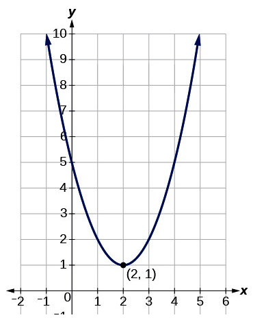The graph of the above function, with the vertex labeled at $(2, 1)$ .
Looking at the graph of the function, we notice that it does not intersect the $x$ -axis. Therefore, it has no real roots.
We can verify this algebraically. First, identify the values for the coefficients: $a = 1$ , $b = - 4$ , and $c = 5$ .
Substituting these into the quadratic formula, we have:
Simplifying, we have:
Notice that we have $\sqrt{-4}$ in the formula, which is not a real number. Therefore, there are no real roots for the given quadratic function. We have arrived at the same conclusion that we reached graphically.
The vertex form of a quadratic function lets its vertex be found easily.
Explain the meanings of the constants
Quadratic equations may take various forms. You have already seen the standard form:
Another common form is called vertex form, because when a quadratic is written in this form, it is very easy to tell where its vertex is located. The vertex form is given by:
$f(x)=a(x-h)^2+k$
The vertex is $(h,k).$ Note that if the form were $f(x)=a(x+h)^2+k$ , the vertex would be $(-h,k).$ The coefficient $a$ as before controls whether the parabola opens upward or downward, as well as the speed of increase or decrease of the parabola.
If you want to convert a quadratic in vertex form to one in standard form, simply multiply out the square and combine like terms. For example, the quadratic
$y=(x-2)^2+1$
Can be rewritten as follows:
It is more difficult to convert from standard form to vertex form. The process is called "completing the square."
Consider the following example: suppose you want to write $y=x^2+4x+6$ in vertex form. Note that the coefficient on $x^2$ (the one we call $a$ ) is $1$ . When this is the case, we look at the coefficient on $x$ (the one we call $b$ ) and take half of it. Then we square that number. Thus for this example, we divide $4$ by $2$ to obtain $2$ and then square it to obtain $4$ .
We then both add and subtract this number as follows:
Note that we both added and subtracted 4, so we didn't actually change our function. Now the expression in the parentheses is a square; we can write $y=(x+2)^2+2.$ Our equation is now in vertex form and we can see that the vertex is $(-2,2).$
It is slightly more complicated to convert standard form to vertex form when the coefficient $a$ is not equal to $1$ . We can still use the technique, but must be careful to first factor out the $a$ as in the following example:
Consider $y=2x^2+12x+5. $ We factor out the coefficient $2$ from the first two terms, writing this as:
$y=2(x^2+6x) + 5$
We then complete the square within the parentheses. Note that half of $6$ is $3$ and $3^2=9$ . So we add and subtract $9$ within the parentheses, obtaining:
$y=2(x^2+6x+9-9)+5$
We can then finish the calculation as follows:
$\begin{align} y&=2((x+3)^2-9)+5 \\ &=2(x+3)^2-18+5 \\ &=(x+3)^2-13 \end{align}$
So the vertex of this parabola is $(-3,-13).$
A quadratic function is a polynomial function of the form $y=ax^2+bx+c$ .
Explain the meanings of the constants
A quadratic function in the form
is in standard form.
Regardless of the format, the graph of a quadratic function is a parabola.
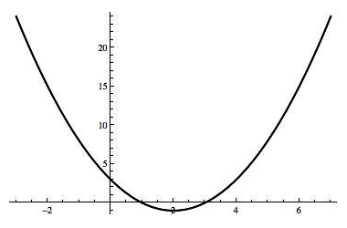The graph of any quadratic equation is always a parabola.
Each coefficient in a quadratic function in standard form has an impact on the shape and placement of the function's graph.
The coefficient $a$ controls the speed of increase (or decrease) of the quadratic function from the vertex. A larger, positive $a$ makes the function increase faster and the graph appear thinner.
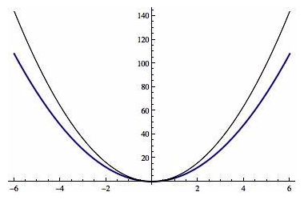The black curve is $y=4x^2$ while the blue curve is $y=3x^2.$ The black curve appears thinner because its coefficient $a$ is bigger than that of the blue curve.
Whether the parabola opens upward or downward is also controlled by $a$ . If the coefficient $a>0$ , the parabola opens upward, and if the coefficient $a<0$ , the parabola opens downward.
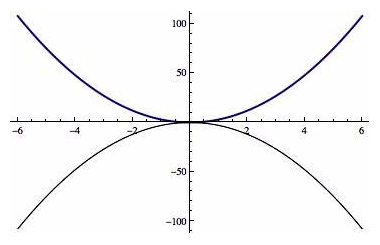The blue parabola is the graph of $y=3x^2.$ It opens upward since $a=3>0.$ The black parabola is the graph of $y=-3x^2.$ It opens downward since $a=-3<0.$
The coefficients $b$ and $a$ together control the axis of symmetry of the parabola and the $x$ -coordinate of the vertex. The axis of symmetry for a parabola is given by:
$x=-\dfrac{b}{2a}$
For example, consider the parabola $y=2x^2-4x+4 $ shown below. Because $a=2$ and $b=-4,$ the axis of symmetry is:
$x=-\frac{-4}{2\cdot 2} = 1$
The vertex also has $x$ coordinate $1$ .
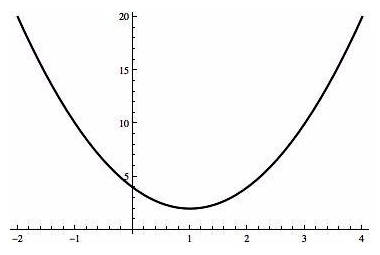The axis of symmetry is a vertical line parallel to the y-axis at $x=1$ .
The coefficient $c$ controls the height of the parabola. More specifically, it is the point where the parabola intercepts the y-axis. The point $(0,c)$ is the $y$ intercept of the parabola. Note that the parabola above has $c=4$ and it intercepts the $y$ -axis at the point $(0,4).$
A quadratic equation of the form $ax^2+bx+c=0$ can sometimes be solved by factoring the quadratic expression.
Use the factors of a quadratic equation to solve it without using the quadratic formula
To factor an expression means to rewrite it so that it is the product of factors. For example, the expression $x^2-7x+12$ can be written as $(x-3)(x-4)$ .
When we multiply $(x-3)$ times $(x-4)$ to obtain $x^2-7x+12$ we call that operation "multiplying out" or sometimes FOILing. (Recall that FOIL stands for First, Outer, Inner, Last, which is how we combine the terms.) The reverse process is called factoring.
Factoring is useful to help solve an equation of the form:
$ax^2+bx+c=0$
For example, if you wanted to solve the equation $x^2-7x+12=0$ , if you could realize that the quadratic factors as $(x-3)(x-4)$ .
You could then rewrite your equation as $(x-3)(x-4)=0 $ and conclude that the two solutions are $x=3$ and $x=4$ .
This follows because the only way that two things can multiply together to be $0$ is if one or the other is $0$ . So the expression $(x-3)(x-4)=0$ tells us that either $x-3=0$ , in which case $x=3$ , or $x-4=0$ , in which case $x=4.$
You may be wondering: but how does one come up with the two factors? Let's consider this same example more extensively.
Again, imagine you want to factor $x^2-7x+12$ . First set up the desired format: $( \quad )( \quad )$
Now lets look at how to fill in the variable slots in this format. The first two terms in each set of parentheses must multiply together to be $x^2$ . So we write $(x \quad )(x \quad )=0$ .
Next we think about the fact that the last two terms must multiply together to be $12.$ We consider the following possibilities for how two numbers could multiply together to be $12,$ namely $12 \cdot 1, 6 \cdot 2,$ or $ 4 \cdot 3.$
Of these possibilities, the ones that add to be $7$ (the middle coefficient) are $4$ and $3$ . Since we are trying to get negative $7x$ in the middle, we try $(x-4)(x-3)$ . FOILing gives exactly what we want, namely:
$\begin{align}(x-4)(x-3)&= x^2-3x-4x+12 \\ &=x^2-7x+12 \end{align}$
Note that we can (and should) check that $4$ and $3$ are solutions to the original equation $x^2-7x+12=0.$
Suppose you want to solve:
$x^2+2x-8=0$
We attempt to factor the quadratic. We would need factors of $-8$ which also add together to be $2$ . It seems as though $4$ and $-2$ might work, so we try factoring this as $(x-2)(x+4).$
FOILing shows us that this is correct:
Thus we have $(x-2)(x+4)=0,$ so either $x-2=0$ in which case $x=2,$ or $x+4=0,$ in which case $x=-4.$ We check our work by plugging both of these numbers back into the original equation and seeing that the equation is satisfied.
When a trinomial is a perfect square, it can be factored into two equal binomials.
Determine whether a quadratic equation is a perfect square and factor it accordingly if it is
Note that if a binomial of the form $a+b$ is squared, the result has the following form: $(a+b)^2=(a+b)(a+b)=a^2+2ab+b^2.$ So both the first and last term are squares, and the middle term has factors of $2, $$a$ , and $b,$ where the latter are the square roots of the first and last term respectively.
For example, if the expression $2x+3$ were squared, we would obtain $(2x+3)(2x+3)=4x^2+12x+9.$ Note that the first term $4x^2$ is the square of $2x$ while the last term $9$ is the square of $3$ , while the middle term is twice $2x\cdot3$ .
It is important to be able to recognize such trinomials, so that they can the be factored as a perfect square.
If you are attempting to to factor a trinomial and realize that it is a perfect square, the factoring becomes much easier to do.
Suppose you were trying to factor $x^2+8x+16.$ One can see that the first term is the square of $x$ while the last term is the square of $4$ . Since the middle term is twice $4 \cdot x$ , this must be a perfect square trinomial, and we can factor it as:
Suppose you were trying to solve $9x^2+6x+1=0.$ You might try to factor the quadratic expression on the left-hand side of the equation. Since the first term is $3x$ squared, the last term is one squared, and the middle term is twice $3x\cdot 1$ , this is a perfect square, and we can write:
$9x^2+6x+1=(3x+1)^2$
Thus the original equation has the form $(3x+1)^2=0$ , so the only solution is when $3x+1=0$ , which is when $3x=-1,$ or $x=-\frac{1}{3}. $ This quadratic equation has only that one solution.
When a quadratic is a difference of squares, there is a helpful formula for factoring it.
Determine whether a quadratic equation is a difference of squares and factor it accordingly if it is.
When we multiply together the two binomials $(x-y)$ and $(x+y)$ , we obtain the product $x^2-y^2.$ Usually when we multiply two binomials we obtain a trinomial, but in this case, when we FOIL, the outer and inner terms cancel. When we recall this fact in the reverse direction, it is called the difference of squares formula:
$x^2-y^2=(x-y)(x+y)$
Another way to think about this formula is to consider trying to solve the equation $x^2=a^2$ for $x$ . Taking the square root of both sides of the equation gives the answer $x = \pm a$ .
But $x^2 = a^2$ can also be solved by rewriting the equation as $x^2-a^2=0$ and factoring the difference of squares. From this, you would obtain:
$(x-a)(x+a)=0$
Thus there are two solutions, where $x-a=0$ ($x=a$ ) and where $x+a=0$ , ($x=-a$ ); the same as above. Using the difference of squares is just another way to think about solving the equation.
Suppose you were trying to factor the quadratic expression:
$x^2-16$
If you recognize the first term as the square of $x$ and the term after the minus sign as the square of $4$ , you can then factor the expression as:
Suppose you were trying to solve the equation:
$16x^4=9$
We could write this as:
$16x^4-9=0$
If we recognize the first term as the square of $4x^2$ and the term after the minus sign as the square of $3$ , we can rewrite the equation as:
$(4x^2-3)(4x^2+3)=0$
This means that either $4x^2-3=0$ or $4x^2+3=0$ . This latter equation has no solutions, since $4x^2$ is always greater than or equal to $0.$ However, the first equation $4x^2-3=0$ can be factored again as the difference of squares, if we consider $3$ as the square of $\sqrt3$ .
Thus we have $(2x-\sqrt3)(2x+\sqrt3)=0.$
Our two solutions occur where $2x-\sqrt3=0$ (which is at $x=\frac{\sqrt3}{2}$ ), and where $2x+\sqrt3=0$ (which is at $x=-\frac{\sqrt3}{2}$ ).
Polynomials of the form $ax^2+bx+c$ can be factored via the trial and error method.
Employ techniques to see whether a general quadratic equation can be factored
We can factor quadratic equations of the form $ax^2 + bx + c$ by first finding the factors of the constant $c$ . The factored form of a quadratic equation takes the general form:
When $a$ is equal to one, $\alpha_1$ and $\alpha_2$ both equal one, and $\beta_1$ and $\beta_2$ are factors of the constant $c$ such that:
When $a$ is not equal to one and not equal to zero, you can FOIL the above expression for the factored form of the quadratic to find that $\alpha_1$ and $\alpha_2$ are factors of $a$ such that:
$a=\alpha_1 \alpha_2$ and $b = \alpha_1 \beta_2 + \alpha_2 \beta_1$
In other words, the coefficient of the $x^2$ term is given by the product of the coefficients $\alpha_1$ and $\alpha_2$ , and the coefficient of the $x$ term is given by the inner and outer parts of the FOIL process.
In some cases, it will be impossible to factor the quadratic such that $\alpha_1$ and $\alpha_2$ are integers.
Let the quadratic equation be:
To factor this, we have to arrange the quadratic equation in order of largest exponent value to smallest exponent value.
Next, we identify the constants $b$ and $c$ , which in this case are $-4$ and $-21$ , respectively.
Then we list the possible pairs of factors of the constant $c$ , which yields the sets 1 and -21, -1 and 21, 3 and -7, and -3 and 7. Next we need to find the factored set of values that add to equal the value of $b$ . In this case, the correct values are 3 and -7, since they add to equal $-4$ . This leads to the factored form:
Let the quadratic equation be:
First, we factor $a$ , which has one pair of factors 3 and 2. Then we factor the constant $c$ , which has one pair of factors 2 and 4. Using these factored sets, we assemble the final factored form of the quadratic
$(\alpha_1 x + \beta_1)(\alpha_2 x + \beta_2)$
Such that $b = \alpha_1 \beta_2 + \alpha_2 \beta_1$ . This leads to the equation:
Completing the square is a method for solving quadratic equations, and involves putting the quadratic in the form $0=a(x-h)^2 + k$ .
Solve for the zeros of a quadratic function by completing the square
Along with factoring and using the quadratic formula, completing the square is a common method for solving quadratic equations. It is often implemented when factoring is not an option, such as when the quadratic is a not already a perfect square.
Consider the formula for a generic quadratic equation:
The method of completing the square allows for the conversion to the form:
where $h$ and $k$ are constants with a specific value.
The value of $k$ is meant to adjust the function to compensate for the difference between the expanded form of $a(x-h)^2$ and the general quadratic function $ax^2+bx+c$ . This adjustment is what mathematically allows for the two forms to be equal.
Once completing the square has been performed, the quadratic is easy to solve; because there is only one place where the variable $x$ is squared, the $(x-h)^2$ term can be isolated on one side of the equation, and then the square root of both sides can be taken.
As an example, consider the following quadratic polynomial:
This quadratic is not a perfect square. The closest perfect square is the square of $5$ , which was determined by dividing the $b$ term (in this case $10$ ) by two and producing the square of the result.
However, it is possible to write the original quadratic as the sum of this square and a constant:
Thus, the constant $h$ takes the value $-5$ and the constant $k$ takes the value $-3$ .
Knowing this, we can now solve for x:
Quadratic relationships between variables are commonly found in physical sciences, engineering, and elsewhere.
Use the quadratic equation to model phenomena studied in science
Quadratic relationships between variables are commonly found in physical sciences, engineering, and elsewhere. Perhaps the most universally used example of quadratic relationships in problem solving concerns right triangles.
The Pythagorean Theorem is used to relate the three sides of right triangles. It states:
This says that the square of the length of the hypotenuse ($c$ ) is equal to the sum of the squares of the two legs ($a$ and $b$ ) of the triangle. This has been proven in many ways, among the most famous of which was devised by Euclid.
In practice, the Pythagorean Theorem is often solved via factoring or completing the square. If any of the variables $a$ , $b$ , or $c$ represent functions in themselves, it is often useful to expand the terms, combine like variables, and then re-factor the expression.
Most all equations involving gravity include a second-order relationship.
Consider the equation relating gravitational force ($F$ ) between two objects to the masses of each object ($m_1$ and $m_2$ ) and the distance between them ($r$ ):
The shape of this function is not a parabola, but becomes such a shape if rearranged to solve for $m_1$ or $m_2$ , as seen below:
The general form of this function is:
which you should recognize as the vertex form of a quadratic equation.
The maximum height of a projectile launched directly upwards can also be calculated from a quadratic relationship. The formula relates height ($h$ ) to initial velocity ($v_0$ ) and gravitational acceleration ($g$ ):
The same maximum height of a projectile launched directly upwards can be found using the time at the projectile's peak ($t_h$ ):
Substituting any time ($t$ ) in place of $t_h$ leaves the equation for height as a quadratic function of time.
The equation relating electrostatic force ($F$ ) between two particles, the particles' respective charges ($q_1$ and $q_2$ ), and the distance between them ($r$ ) is very similar to the aforementioned formula for gravitational force:
This is known as Coulomb's Law. Solving for either charge results in a quadratic equation where the charge is dependent on $r^2$ .
For problems involving quadratics in finance, it is useful to graph the equation. From these, one can easily find critical values of the function by inspection.
Apply the quadratic function to real world financial models
The method of graphing a function to determine general properties can be used to solve financial problems.Given the algebraic equation for a quadratic function, one can calculate any point on the function, including critical values like minimum/maximum and x- and y-intercepts.
These calculations can be more tedious than is necessary, however. A graph contains all the above critical points and more, and acts as a clear and concise representation of a function. If one needs to determine several values on a quadratic function, glancing at a graph is quicker than calculating several points.
Consider the function:
Suppose this models a profit function $f(x)$ in dollars that a company earns as a function of $x$ number of products of a given type that are sold, and is valid for values of $x$ greater than or equal to $0$ and less than or equal to $500$ .
If a financier wanted to find the number of sales required to break even, the maximum possible loss (and the number of sales required for this loss), and the maximum profit (and the number of sales required for this profit), they could simply reference a graph instead of calculating it out algebraically.
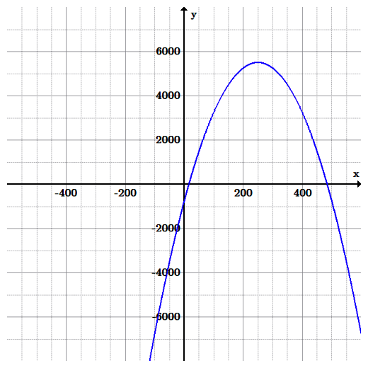Graph of the equation $F(x) = -\frac{x^2}{10} + 50x - 750$ , where the x-axis is number of sales, and the y-axis is the monetary return. A parabola opening down, with positive roots and a vertex at about (250, 5500).
By inspection, we can find that the break-even points ($x$ -intercepts) are between $15$ and $16$ sales, and between $484$ and $485$ sales. The maximum loss before the second break-even points is \$750 (the y-intercept), which is lost at $0$ sales. After the second break-even point, the function decreases to infinity, so the losses continue to increase. Maximum profit is \$5500 (the vertex), which is achieved at $250$ sales.
{kind=link}
{kind=link}
{kind=link}
{kind=link}
{kind=link}
{kind=link}
{kind=link}
{kind=link}
{kind=link}
{kind=link}
{kind=link}
{kind=link}